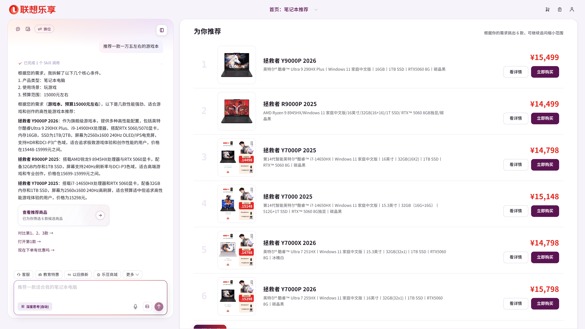
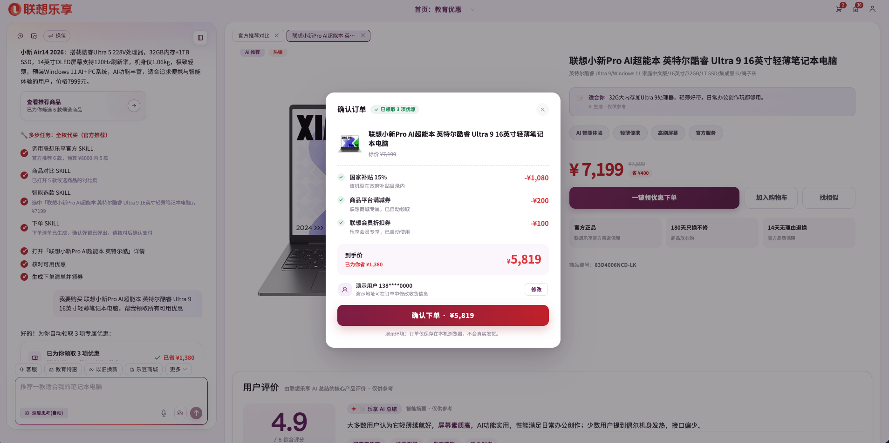

下一代的乐享，应该是什么样子？
说人话就行，不用学怎么用。
AI 不止回答，直接替你打开页面、对比、下单、办服务。
每一步可见、可打断，最终拍板永远是你。

搜索、筛选、比较、验证、择时——每一步都要用户自己动手、自己判断，平台只负责「陈列」。
「笔记本」搜出几千个 SKU，参数、配置、价格档位交叉，不熟悉参数的用户难以判断哪款适合自己。
就算给了 AI 入口，真实场景里相当一部分人第一句话就卡住——需求在脑子里，说不成一句完整的话。
自己搜、自己筛、自己排序
听懂需求，直接给候选
逐个比参数、翻评价、比价
自动对比、自动选款
领券规则自己研究
自动领取、自动叠加
反复比较、难以决定
只剩拍板——AI 已备好一切
六万条真实提问聚类，以占比定优先级，而非竞品清单。
本地规则毫秒级、小模型路由口语、官方 SKILL 管复杂能力。
用户不会开口？引导替他把需求问清楚。
说话就是操作，AI 说到哪、页面展示到哪。
一句话走完推荐→对比→选款→下单，过程全可视。
注：其余 9.1% 为通用咨询、多模态等。
49.8% 的人在买东西——做法一条链：识别购买意图 → 逐级引导 → 引到下单。引导的终极形态就是「多步任务链」：1.1% 的用户直接开口要“自主下单”，一句话直达订单。
41.1% 在问服务、会员、门店——高频短词全部本地秒回：查保修、找门店、要人工，零等待。体验做顺，买的转化才有土壤。
打两个字「推荐」，品类→用途→预算逐级点选拼成完整需求；「以旧换新」「国补」「清灰」「认证」等高频词一打出就弹对应引导——词表全部来自六万条提问聚类。
结合右侧当前打开的页面，把模糊短词补全成可执行指令；商品详情停留片刻主动递「算到手价」、久看未动再递「找相似」——替代满屏常驻按钮。
每次回答后固定给 3 个下一步建议，可执行操作排最前（如「对比第 1、2、3 款」「打开第 1 款」），本地秒显、点了立刻执行；咨询型建议由模型异步补齐。
说过「预算 7000」，后面追问自动带上；「对比一下」自动带上上一轮推荐的商品——用户忘了说的，系统替他记着。
预判贯穿全旅程：开口之前、浏览之中、回答之后、多轮之间——「让用户会提问」本身就是产品能力，引导是转化的第一级漏斗。
左边对话、右边页面联动——AI 说到哪，右侧展示到哪：推荐出商品墙、对比开参数表、下单弹确认单，用户不用在对话和页面间来回切。
「打开拯救者Y9000P」「第三个不错，下单吧」「回首页」「全屏」——导航、比较、下单、窗口控制全部一句话完成，序号按用户屏幕上看到的顺序数。
下单前自动核对可用优惠：国补、平台满减、会员折扣自动领取叠加，省多少钱当场展示。
「认证」秒回三类身份选择直开表单；「人工」秒切专属客服模式——服务入口不藏在菜单里。
每个 SKILL 的调用与结论逐行展示——AI 不是黑盒。
官方超时/空结果自动降级续跑，任何分支都有下文。
终点是「确认支付」弹窗——AI 干活，人拍板，可打断可反悔。

引导漏斗、意图路由、操作闭环——换成手机、服务、企业方案，架构原样复用，改的只是数据和文案。
两个支撑点都可复制：数据驱动的功能决策（拿真实提问聚类定优先级），分层意图架构（该快的快、该智能的智能、该守边界的守边界）。